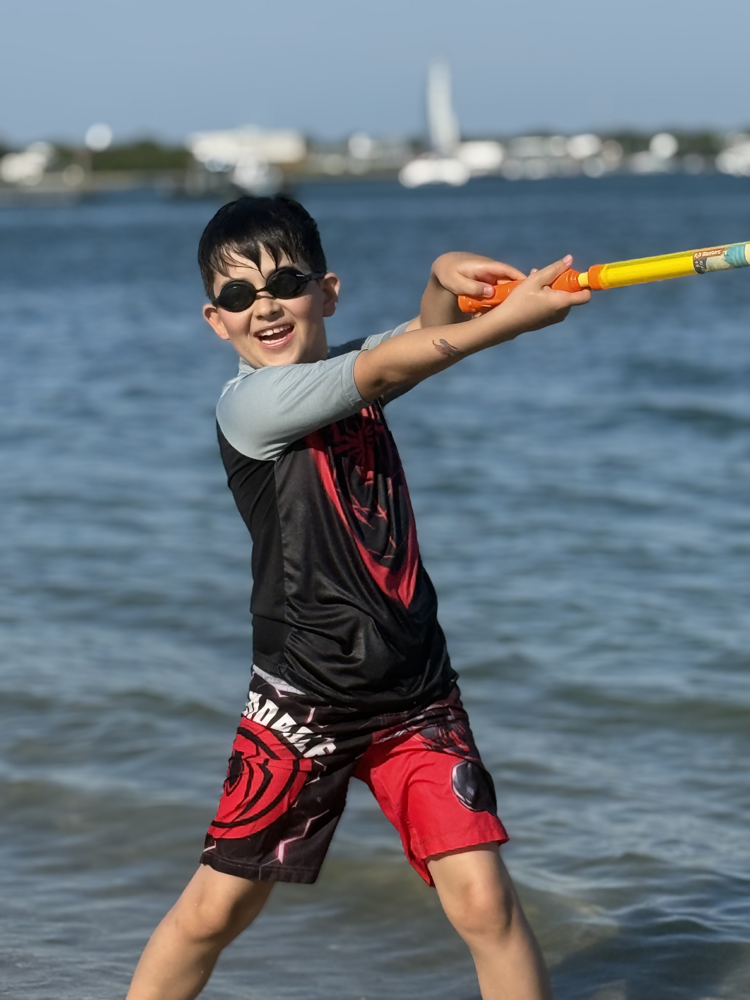
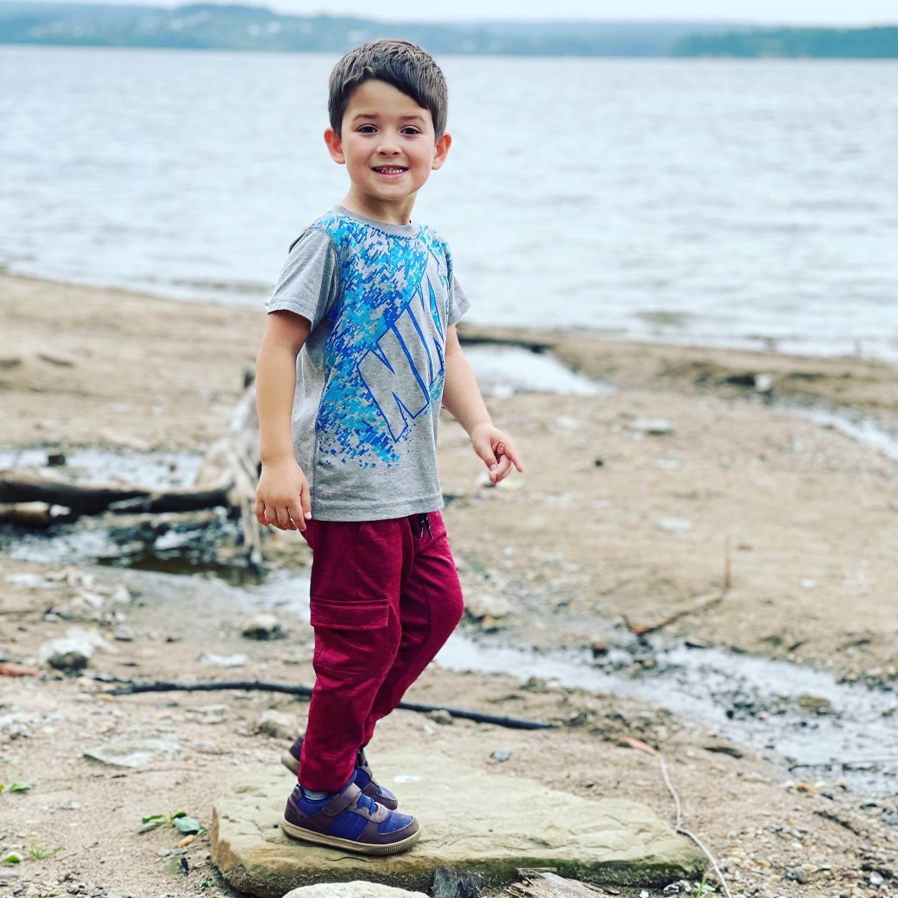
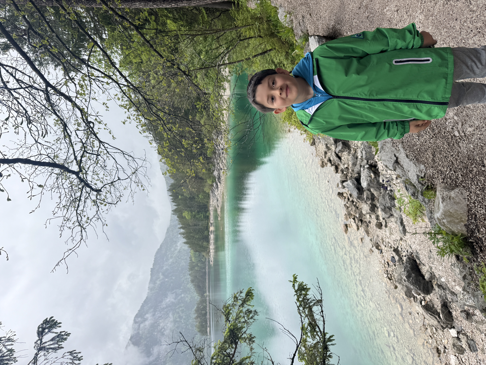

Aleksey’s Journey
At just 4 months old, Aleksey was, in his doctor’s words, the healthiest and happiest baby he had ever seen. Just days later, in the middle of an ordinary bath, our world fell apart. His tiny body went stiff. He stopped breathing. His skin turned blue. In a moment, the carefree joy of new parenthood was replaced by a terror no parent should ever have to know.
The hospital couldn’t explain what had happened. We were sent home with a diagnosis that didn’t feel right. But a mother knows her child, and deep in my heart, I knew something was terribly wrong. Days later, we were back in the ER. Just as we were about to be sent home again, Aleksey had a seizure in my arms. I watched my baby suffer, helpless to stop it, terrified that I might lose him.
That moment led us to Children’s Mercy in Kansas City, where we spent 10 days in the PICU. There were medications, treatments, endless questions, and a desperate search for answers. But the answers didn’t come until January 2017, when genetic testing finally gave a name to the invisible battle taking over our baby’s life: SCN8A, a rare genetic epilepsy.
Since then, our family has learned to live with a fear that never completely goes away.
As a military family, we’ve moved from Kansas to Colorado, California, and finally Virginia. Each move meant starting over—new doctors, new schools, new medical teams, and the exhausting search for someone who understood Aleksey’s condition. After years of searching for the right neurologist and the right medication, we finally found a specialist who understands SCN8A. Today, his seizures are less frequent, but they have begun happening at night.
And so, even at 10 years old, Aleksey sleeps in our room.
We listen for him. We watch over him. We try to sleep while knowing that a seizure could happen in the darkness, when we are least prepared to help him. Every parent worries about their child. But there is a particular kind of heartbreak in knowing that even when your child is safely tucked into bed, you cannot fully protect him from what his own body might do.
We want to give him the freedom to grow up. We just want to know he’ll be safe enough to do it.
Because here’s the thing about Aleksey: he is so much more than his diagnosis.
He is a kind, funny, deeply empathetic 10-year-old who loves drawing, puzzles, swimming, traveling, and making new friends. He notices other people’s feelings. He finds joy in the little things. He wants to explore the world, make memories, and be a kid.
He deserves all of that.
We have never wanted to raise him in a bubble or let fear define the boundaries of his life. We want him to have sleepovers someday, to build friendships, to become more independent, and to enter his teenage years with confidence instead of constant worry. We want him to experience the world beyond the walls of our home without his condition always dictating what is possible.
That is why we are raising funds for a specially trained service dog through Eyes Ears Nose & Paws.
This dog would be so much more than a companion. With appropriate training, a service dog could help alert us to seizure-related changes, provide comfort and sensory grounding, and offer Aleksey a steady, reassuring presence through the uncertainty of his condition. A dog could help us work toward the day when he feels safe sleeping in his own room. When he can venture out with friends. When he can begin to experience the independence every child deserves.
We know a service dog cannot cure SCN8A or erase every fear we carry. But perhaps it can help make the world feel a little less frightening for Aleksey—and give our family a little more room to breathe.
We cannot take away the seizures. We cannot promise him a life without fear. But we can try to give him a best friend who will walk beside him through it all.
Please help us bring Aleksey his four-legged best friend. Every donation, no matter the size, brings us one step closer to giving him more safety, more independence, and more opportunities to simply be the happy, curious, wonderful boy he is.
And if you cannot donate, sharing his story means more than you know.
From one family hoping for a little more peace, and one little boy who deserves the chance to grow up with confidence, friendship, and joy—thank you for helping us make that hope a reality. 🐾
Photo Gallery


